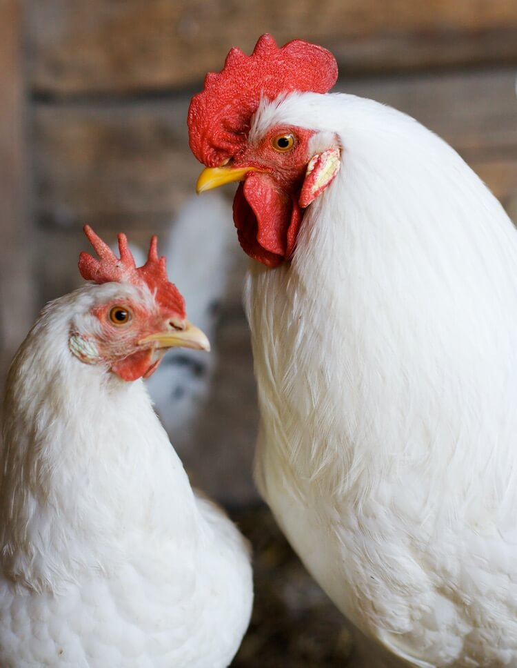 chicken (Gallus domesticus) is a domesticated species that arose from the red junglefowl, originally from India. They have also partially hybridized with other wild species of junglefowl (the grey junglefowl, Ceylon junglefowl, and green found in the Americas, Europe, the Middle East, and Africa originated from the Indian subcontinent. From ancient India, the chicken spread to the Eastern Mediterranean. They appear in ancient Egypt in the mid-15th century BC, with the "bird that gives birth every day" having come from the land between Syria and Shinar, Babylonia, according to the annals of Thutmose III.They are known in ancient Greece from the 5th century
n chickens, the process of egg laying occurs during the long stretches of summer months. A female hen after ovulation takes around 23 to 26 hours to lay the eggs. Another ovulation occurs in hens, one hour after the first set of eggs were laid.
The Chick -stage 2By week 3 or 4 the chicks start to grow bigger and develop proper feathers. By week 8, the chicks are large enough to go outside and change their food items. From pecking on grains, they are able to peck on mealworms, scrambled eggs etc.
The Pullet - (Adolescent) Stage 3Adult chickens moult annually where they shed old feathers and grow new feathers. After one year of monotonous egg- laying, the chicken gets exhausted and the chickens start laying eggs irregularly.
The Adult - Stage 4A pullet is two-thirds the size of an adult chicken and can get bullied during the pecking order. An adolescent female chicken might lay eggs after 18 weeks and the eggs she lays are comparatively smaller than adult eggs.
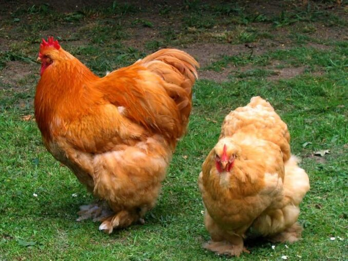They are one of the cutest and fluffy chicken breeds in the world. These common chicken breeds are quite calm and polite in nature. They come off as a large breed weighing about 10lbs when fully grown. And regardless of their size, they do pretty well in confinement. In addition, they are raised on both meat and eggs. know more
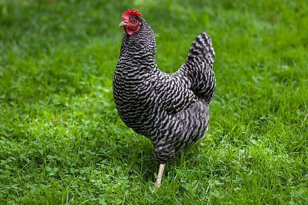These birds are good dual-purpose breeds that produce awesome meat and eggs. Their hens can produce about 280 eggs in a year. Also, they are calm and friendly and will do well as family pets. If you have kids in your neighborhood they are sure to fall in love with this elegant breed.
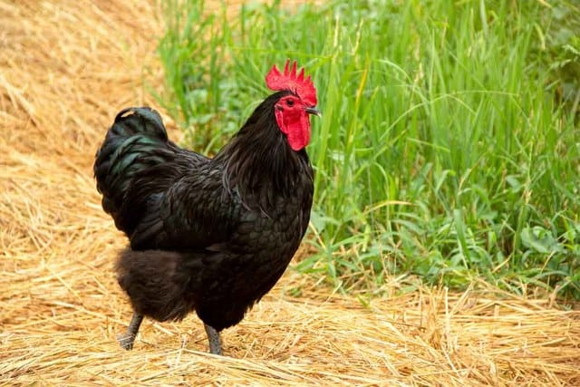Dating as far back as the 1800s these chickens originate from Australia. Furthermore, they are closely related to the Orpington chicken. The Australians created the Australorp to be excellent egg layers. And they were successful with this.Therefore, if you are looking for an excellent egg layer then the Australorp chicken is certainly a good choice.
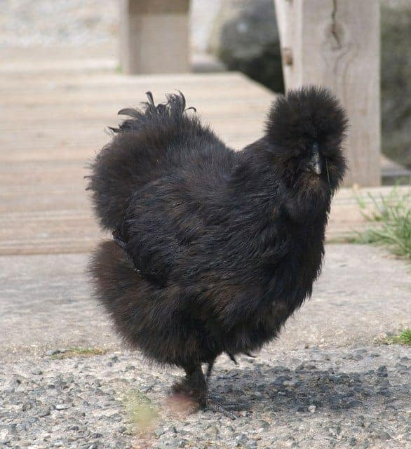These birds are small chicken breeds covered in silky feathers. They are made up of black bones, skin, and meat. In addition, these birds are made up of five toes instead of the standard four. In as much as they are covered with silkie feathers, they are often susceptible to cold. Therefore they require special attention during cold weather. Interestingly, their meat is thought to have magical medicinal benefits. Although they are not very good egg layers they are often kept for their brooding ability.
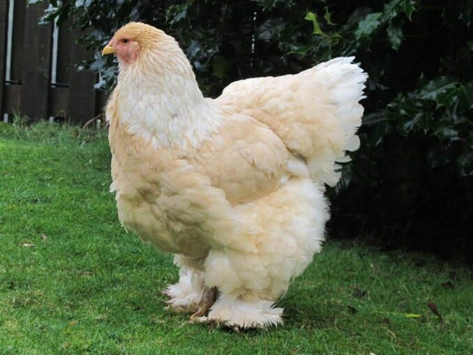They are popularly known for their large size and have been nicknamed the king of Chickens. These big guys weigh about 7-12lbs when grown. Furthermore, they enjoy confinement but can also be raised in free-range as well. Due to their size, these birds are mostly used for meat but can lay a tangible about of eggs too. You can expect a Brahma hen lay up to 150 eggs in a year. know more
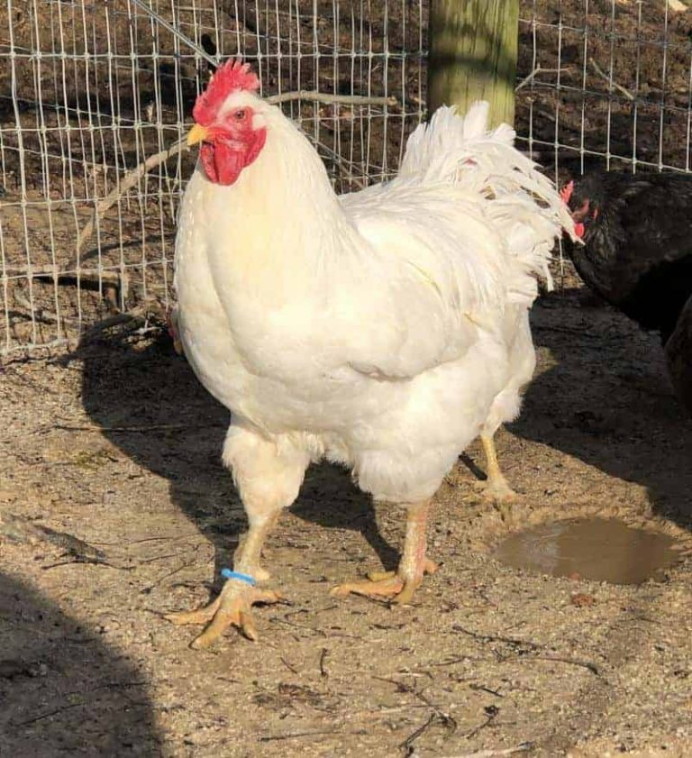They are one of the largest birds in the history of birds weighing about 9-15lbs. The Jersey Giant chicken was initially bred for meat. However, it became a dual-purpose breed and can easily give you up to 150 - 200 large brown eggs in a year. If you are an egg lover then you will definitely fall in love with Jersey Giant,s large brown eggs. Furthermore, as much as they come in three different colors, the black breed is more common. Despite their size, these chicken breeds are gentle, calm, and easy-going and love to forage a lot.
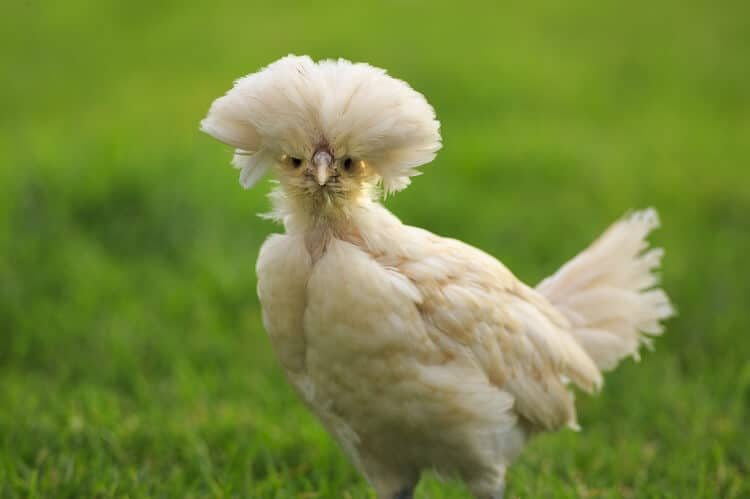These birds have feathered crests that block their sight at times making them quite nervous around humans. To avoid this, it is always better to keep their crest trimmed. Nevertheless, the Polish Chicken is one friendly chicken you will enjoy. This is because they are also docile and easy to tame.
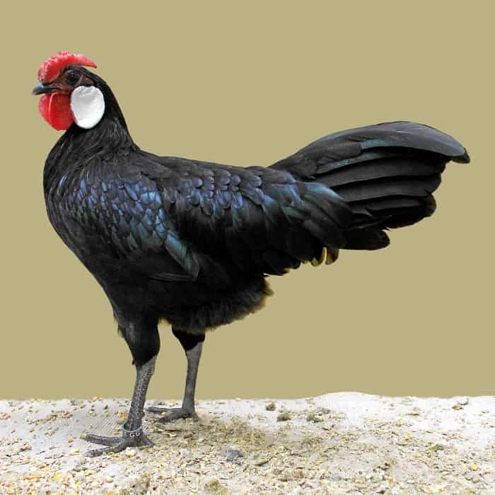These birds are hardy birds that do well in warm temperatures and enjoy foraging. Also, they love to be in the company of humans. Although Minorcas are dual-purpose breeds, they are mostly bred for their egg-laying ability. The Minorca hen can lay up to 4 large white eggs in a week. Their eggs are the most amazing and largest white eggs among the Mediterranean poultry breeds. Black Minorcas are the most common colors that are available and although there are white ones they are rare.
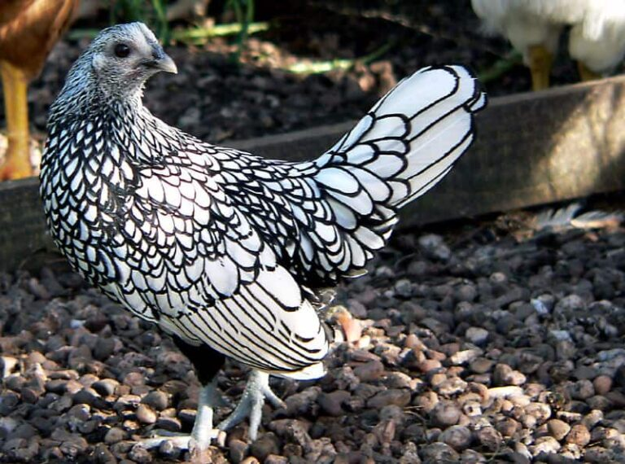These birds are mostly used for ornamental and show purposes. Due to their miniature size, they do not make good foragers as they can easily fall prey to predators. Nevertheless, they are quite easy to nurture. These chickens are very friendly and get along well with children. Although they are not excellent egg layers, they can lay about 160 small white eggs in a year know more
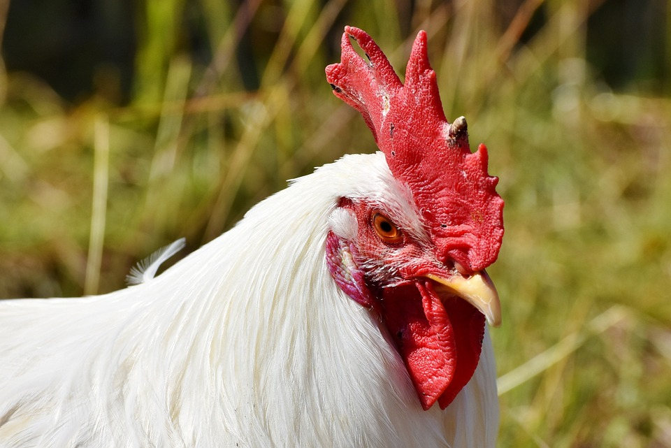The breed was first introduced to Britain from the United States in 1870, and from there re-exported to Italy.[6] White Leghorns that had won first prize at the 1868 New York Show were imported to Britain in 1870, and brown Leghorns from 1872.[11]These birds were small, not exceeding 1.6 kg in weight; weight was increased by cross.
For as long as anybody can remember, hens have been raised on farms as pets and farm birds. Hens and chicks are beneficial to humans for a variety of reasons: Hens are reared for eggs and meat in the poultry industry. Boilers are a particular breed of chicken bred for slaughter and used in a variety of cuisines around the world. Chicken flesh is the most extensively consumed meat worldwide. Hens have been kept as pets, and male chickens are typically used in cockfights, a pastime popular in Asia and other parts of the world.